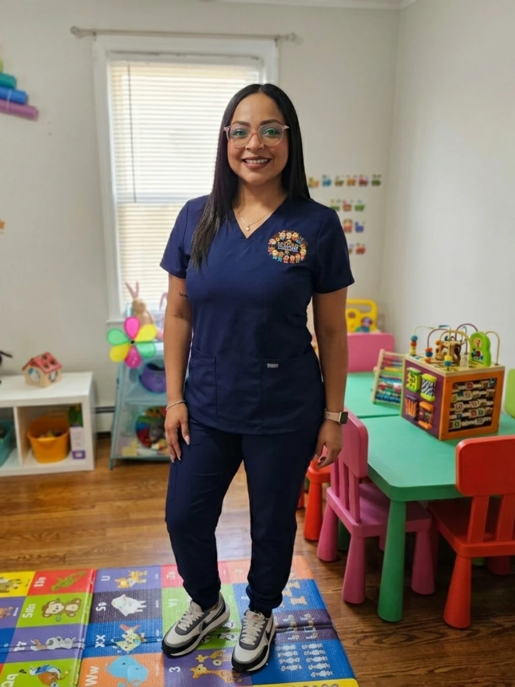
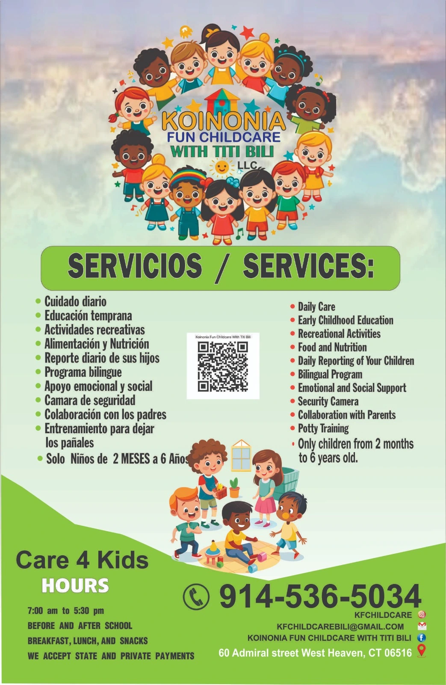
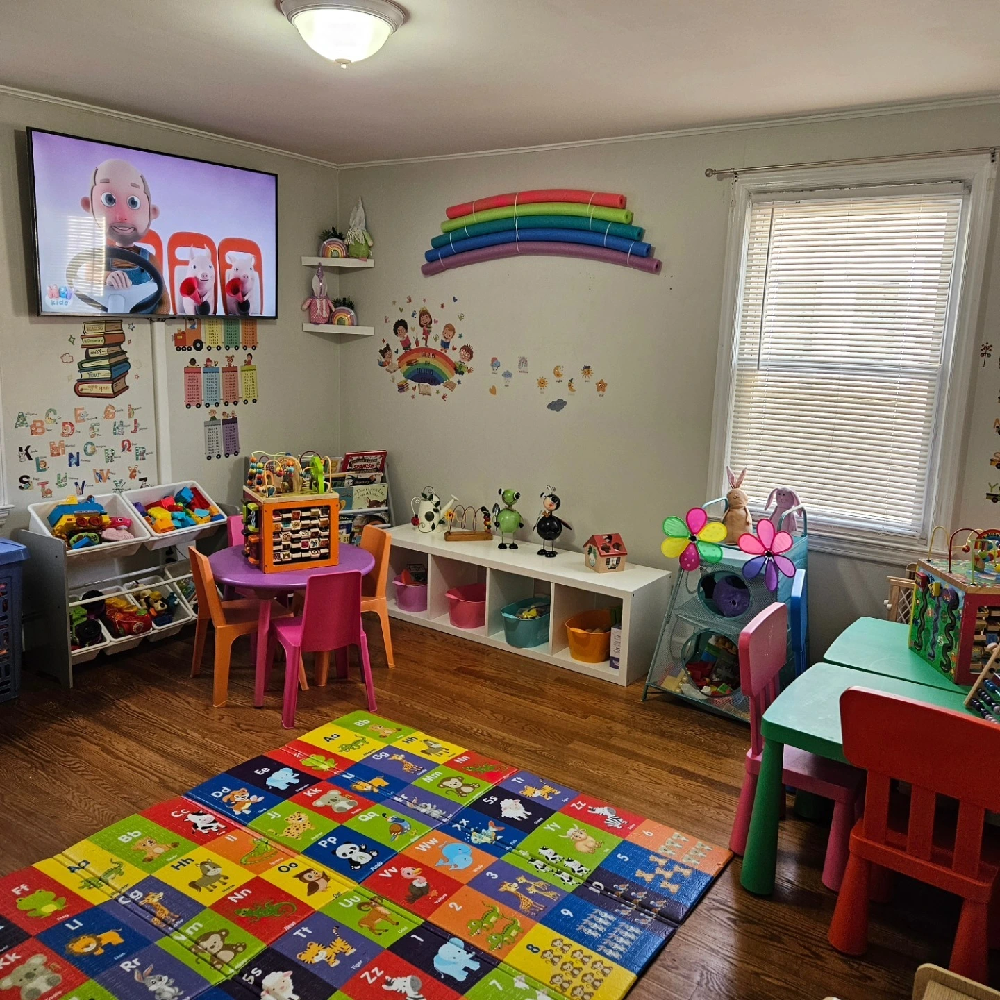
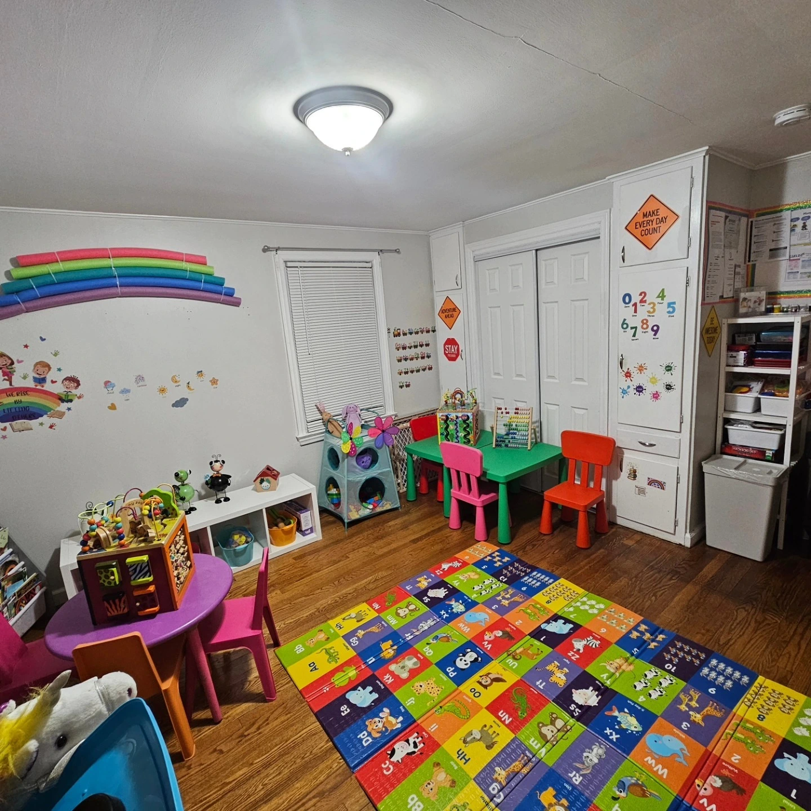

Programa bilingüe
Experiencias diarias en inglés y español dentro de un ambiente amigable y familiar.
Un ambiente seguro, amoroso y educativo donde los niños aprenden, crecen y se desarrollan cada día con atención personalizada.
Koinonia Fun Childcare With Titi Bili, LLC está dirigido por Karla Gomez, proveedora de cuidado infantil con las licencias, entrenamientos, experiencia y competencias requeridas por el Estado de Connecticut.
Nuestra misión es ofrecer un ambiente cálido, seguro y familiar donde cada niño se sienta amado, acompañado y motivado a crecer.

Combinamos cuidado, aprendizaje, juego y rutinas diarias para apoyar el desarrollo de cada niño.
Experiencias diarias en inglés y español dentro de un ambiente amigable y familiar.
Actividades apropiadas para la edad que estimulan creatividad, lenguaje y habilidades sociales.
Desayuno, almuerzo y meriendas como parte de la rutina diaria de cuidado.
Acompañamiento paciente para ayudar a los niños a desarrollar confianza e independencia.
Apoyo flexible para familias que necesitan cuidado antes y después de la escuela.
Los padres se mantienen informados sobre el día, la rutina y el progreso de sus hijos.

Nuestro ambiente está diseñado para apoyar el aprendizaje temprano, la creatividad, las rutinas y experiencias felices durante la niñez.


Contáctanos hoy para conocer más sobre inscripciones, disponibilidad, Care 4 Kids y nuestros servicios de cuidado infantil.
Dirección:
60 Admiral Street
West Haven, CT 06516
Horario:
Lunes a viernes
7:00 AM – 5:30 PM
Correo:
kfchildcarebili@gmail.com
Teléfono:
(914) 536-5034